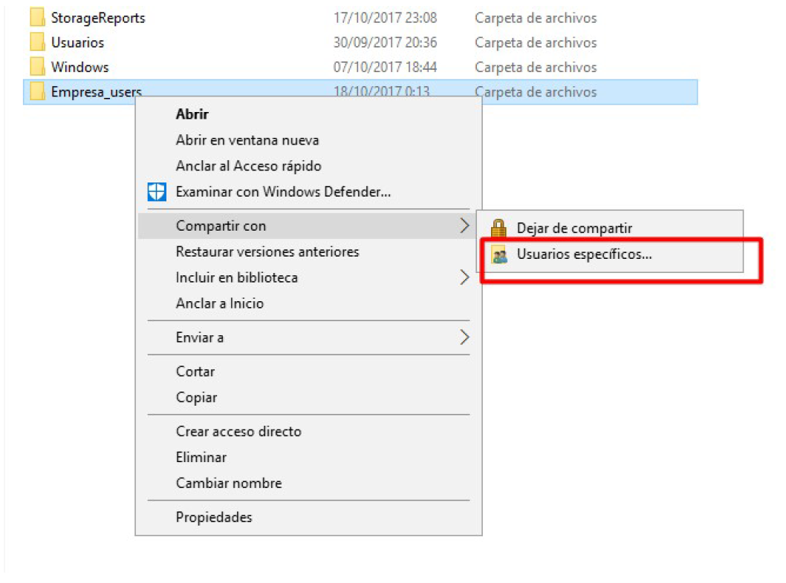
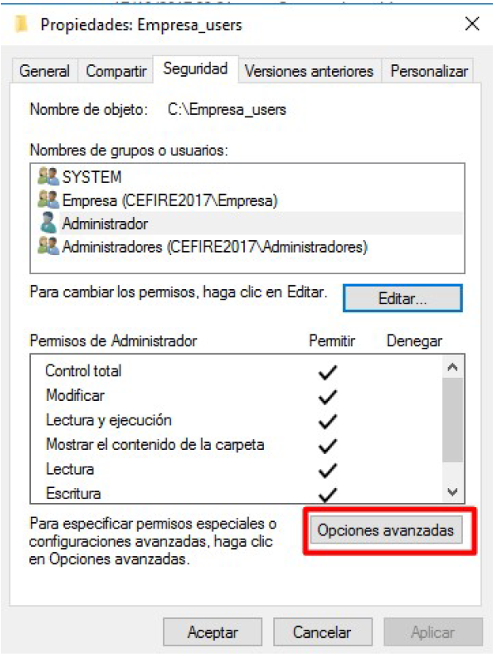
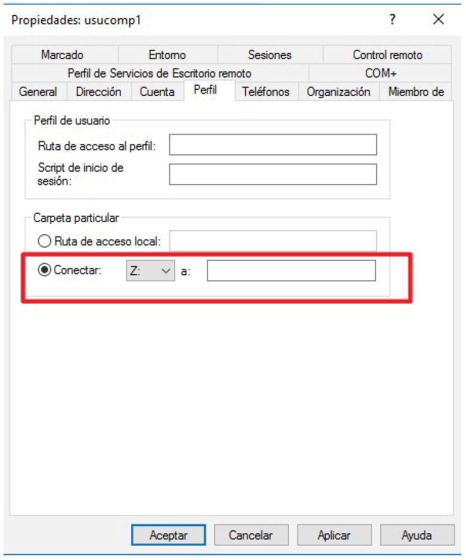
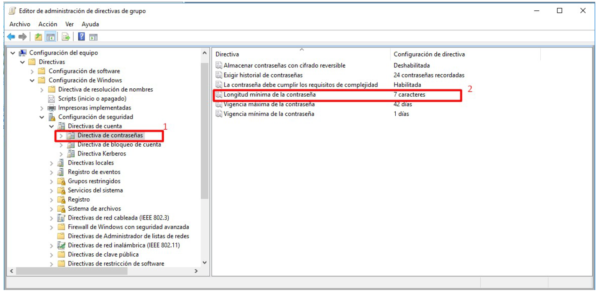
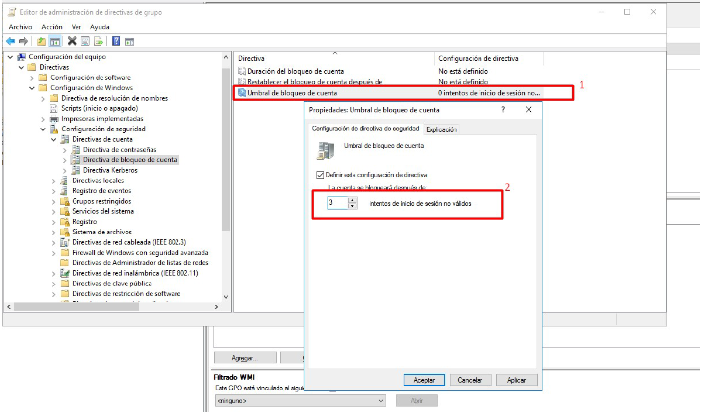

Práctica: Gestión de recursos compartidos en Active Directory¶
Objetivos¶
Durante esta práctica aprenderás a gestionar recursos compartidos en un dominio de Active Directory: crear estructuras de carpetas, configurar permisos NTFS y compartidos, asignar carpetas personales a usuarios y aplicar directivas de grupo (GPO) para políticas de contraseñas y bloqueo de cuenta.
Al finalizar esta práctica serás capaz de:
- Crear la estructura de carpetas para una organización en el servidor.
- Configurar permisos de recursos compartidos y permisos NTFS con diferentes niveles de acceso.
- Asignar carpetas personales a usuarios del dominio.
- Configurar unidades de red (carpeta personal y carpeta de empresa) que se conecten al iniciar sesión.
- Aplicar GPO para directivas de contraseñas (vigencia, historial, longitud).
- Configurar bloqueo de cuenta tras intentos fallidos de contraseña.
- Documentar el proceso completo.
Requisitos previos¶
- Dominio de Active Directory configurado (PR401).
- Usuarios y grupos creados (PR402, PR403).
- Al menos un equipo cliente unido al dominio.
Tareas a realizar¶
- Crear estructura de carpetas en disco (ej:
C:\Empresa_Users,C:\Empresa_Datoscon subcarpetas por departamento). - Compartir carpetas y asignar permisos de recursos compartidos (solo miembros del grupo correspondiente).
- Configurar permisos NTFS con diferentes niveles según el rol (Administradores, trabajadores nivel 1, etc.).
- Realizar comprobaciones de acceso para verificar que los usuarios acceden correctamente según su grupo.
- Crear estructura para carpetas particulares (ej:
C:\Empresa_Userscon subcarpetas por usuario). - Configurar carpeta personal y carpeta de empresa para que al iniciar sesión se conecten automáticamente en la unidad X: (personal) y Y: (empresa).
- Configurar GPO de contraseñas: vigencia 90 días, historial 5 contraseñas, longitud mínima 4 caracteres, sin complejidad obligatoria.
- Configurar GPO de bloqueo: 4 intentos fallidos bloquean la cuenta; contador se restablece tras 10 minutos.
- Documentar el proceso con capturas de pantalla.
Entregables¶
- Documentación en Markdown con:
- Descripción de permisos compartidos vs NTFS.
- Pasos seguidos para crear la estructura y configurar permisos.
- Configuración de carpetas personales y GPO.
- Capturas de pantalla del proceso completo.
- Comprobaciones de acceso realizadas.
- Evidencias: capturas de las directivas de contraseña y bloqueo de cuenta configuradas.
Documentación¶
Incluye en tu informe:
- Capturas de la estructura de carpetas creada.
- Capturas de los permisos compartidos y NTFS configurados.
- Capturas de la configuración del perfil del usuario (carpeta particular).
- Capturas de las directivas de contraseña y bloqueo de cuenta en la GPO.
- Capturas de las unidades de red conectadas al iniciar sesión.
- Descripción de las comprobaciones de acceso realizadas.
Paso 1: Crear la estructura de carpetas en disco¶
Crea la estructura de carpetas en el controlador de dominio (o servidor de archivos). Por ejemplo: carpeta para usuarios (Empresa_Users), carpeta de datos compartidos (Empresa_Datos) con subcarpetas por departamento.
GUI¶
- Conecta mediante RDP al controlador de dominio.
- Abre Explorador de archivos y navega a
C:\. - Crea las carpetas:
C:\Empresa_Users(carpetas personales)C:\Empresa_Datos(datos compartidos)- Dentro de
Empresa_Datos: subcarpetas por departamento (ej:Ventas,Contabilidad,RRHH).
- Dentro de
Empresa_Users, crea una subcarpeta por cada usuario (ej:eduard.casavella,pep.terron) o deja que se creen automáticamente al configurar el perfil.
PWSH¶
# Crear estructura base
New-Item -Path "C:\Empresa_Users" -ItemType Directory -Force
New-Item -Path "C:\Empresa_Datos" -ItemType Directory -Force
# Subcarpetas por departamento
@("Ventas", "Contabilidad", "RRHH") | ForEach-Object {
New-Item -Path "C:\Empresa_Datos\$_" -ItemType Directory -Force
}
# Verificar
Get-ChildItem -Path "C:\Empresa_Users", "C:\Empresa_Datos" -Recurse
Paso 2: Compartir carpetas y asignar permisos de recursos compartidos¶
Comparte las carpetas para que sean accesibles por red. Asigna permisos de recurso compartido: solo los miembros del grupo correspondiente deben poder acceder a cada carpeta.
GUI¶
- Clic derecho sobre
C:\Empresa_Users→ Compartir con → Usuarios específicos. - Agrega el grupo de usuarios del dominio (ej:
Domain Userso un grupo creado comoEmpresa) con Lectura/Escritura. - Haz clic en Compartir y anota la ruta de red (ej:
\\DC01\Empresa_Users). - Repite para
C:\Empresa_Datosy sus subcarpetas según los grupos que deban acceder. - Para más control, usa Propiedades → pestaña Compartir → Uso compartido avanzado → Permisos para asignar permisos por grupo.

PWSH¶
# Compartir Empresa_Users con Domain Users (lectura/escritura)
New-SmbShare -Name "Empresa_Users" -Path "C:\Empresa_Users" -ChangeAccess "Domain Users"
# Compartir Empresa_Datos (lectura para todos los usuarios del dominio)
New-SmbShare -Name "Empresa_Datos" -Path "C:\Empresa_Datos" -ReadAccess "Domain Users"
# Verificar recursos compartidos
Get-SmbShare | Where-Object { $_.Name -like "Empresa*" }
Permisos de recurso compartido
-FullAccess: Control total-ChangeAccess: Lectura y escritura-ReadAccess: Solo lectura
Paso 3: Configurar permisos NTFS¶
Los permisos NTFS complementan los permisos compartidos y permiten un control más granular. Configura diferentes niveles según el rol: Administradores (control total), trabajadores (lectura/escritura en su departamento), etc.
GUI¶
- Clic derecho sobre
C:\Empresa_Users→ Propiedades → pestaña Seguridad. - Opciones avanzadas → Deshabilitar herencia → Convertir los permisos heredados en explícitos (para no heredar de C:).
- Agregar el grupo correspondiente (ej:
Domain Users) con Modificar o Control total según necesites. - Elimina el grupo Usuarios si no quieres acceso genérico.
- Para cada subcarpeta de
Empresa_Datos, asigna permisos solo al grupo del departamento correspondiente.

PWSH¶
# Deshabilitar herencia y asignar permisos NTFS a Empresa_Users
$path = "C:\Empresa_Users"
$acl = Get-Acl $path
$acl.SetAccessRuleProtection($true, $false) # Deshabilitar herencia, no eliminar heredados
$rule = New-Object System.Security.AccessControl.FileSystemAccessRule("Domain Users", "Modify", "ContainerInherit,ObjectInherit", "None", "Allow")
$acl.AddAccessRule($rule)
Set-Acl $path $acl
# Permisos para Administradores (control total)
$adminRule = New-Object System.Security.AccessControl.FileSystemAccessRule("Domain Admins", "FullControl", "ContainerInherit,ObjectInherit", "None", "Allow")
$acl.AddAccessRule($adminRule)
Set-Acl $path $acl
Permisos efectivos
Cuando se accede por red, se aplican ambos permisos (compartido y NTFS). El permiso efectivo es el más restrictivo.
Paso 4: Crear carpetas personales para cada usuario¶
Cada usuario debe tener una subcarpeta dentro de Empresa_Users con permisos exclusivos para él. La variable %username% se sustituye automáticamente por el nombre del usuario.
GUI¶
- En
C:\Empresa_Users, crea una subcarpeta por usuario (ej:eduard.casavella,pep.terron) o deja que se cree al asignar el perfil. - Clic derecho en cada subcarpeta → Propiedades → Seguridad.
- Asigna Control total al usuario correspondiente y a Administradores del dominio.
- Si usas una única carpeta compartida con
%username%, asegúrate de que el recurso compartido permita a cada usuario crear/acceder a su subcarpeta (permisos en la carpeta raíz con herencia).
PWSH¶
# Crear carpeta personal para cada usuario y asignar permisos
# Usuarios de la PR403 (Area Studio): responsables de departamento
$dominio = (Get-ADDomain).NetBIOSName
$usuarios = @("eduard.casavella", "pep.terron", "fran.delgado", "marcos.sabates", "irene.masot")
foreach ($user in $usuarios) {
# Verificar que el usuario existe en AD
$adUser = Get-ADUser -Filter "SamAccountName -eq '$user'" -ErrorAction SilentlyContinue
if (-not $adUser) {
Write-Warning "El usuario '$user' no existe en Active Directory. Omitiendo."
continue
}
$userPath = "C:\Empresa_Users\$user"
New-Item -Path $userPath -ItemType Directory -Force
$acl = Get-Acl $userPath
$identity = "$dominio\$user"
$rule = New-Object System.Security.AccessControl.FileSystemAccessRule($identity, "FullControl", "ContainerInherit,ObjectInherit", "None", "Allow")
$acl.AddAccessRule($rule)
Set-Acl $userPath $acl
}
Si aparece 'Some or all identity references could not be translated'
Ese error indica que el sistema no puede resolver la identidad del usuario o grupo. Comprueba que:
- Los usuarios de la PR403 existen en Active Directory (eduard.casavella, pep.terron, etc.). Completa la PR403 antes de ejecutar este script.
- El script se ejecuta en el controlador de dominio o en un equipo unido al dominio.
- Si Get-ADDomain falla, define el dominio manualmente: $dominio = "EMPRESA" (usa el nombre NETBIOS de tu dominio, no el FQDN).
Paso 5: Configurar carpeta personal y carpeta de empresa en el usuario¶
Configura en Active Directory que al iniciar sesión el usuario tenga:
- Unidad X: → carpeta personal (
\\servidor\Empresa_Users\%username%) - Unidad Y: → carpeta de empresa/datos (
\\servidor\Empresa_Datos)
GUI¶
- Abre Usuarios y equipos de Active Directory (
dsa.msc). - Selecciona el usuario → clic derecho → Propiedades.
- Pestaña Perfil:
- Ruta de acceso al perfil: (opcional, para perfil móvil)
\\DC01\Empresa_Users$\%username%\perfil - Carpeta particular - Conectar: selecciona X:
- Carpeta particular - Ruta:
\\DC01\Empresa_Users\%username%
- Para la carpeta de empresa (unidad Y:), usa un script de inicio de sesión o una GPO de redirección. Alternativa: crear un script que ejecute
net use Y: \\DC01\Empresa_Datosy asignarlo en Script de inicio de sesión en el perfil del usuario.

PWSH¶
# Variables: ajusta nombre del servidor y dominio
$servidor = "DC01" # Nombre del controlador de dominio
$shareUsers = "Empresa_Users"
$shareDatos = "Empresa_Datos"
# Configurar carpeta personal (unidad X:) para un usuario
Set-ADUser -Identity "eduard.casavella" -HomeDrive "X:" -HomeDirectory "\\$servidor\$shareUsers\eduard.casavella"
# Para configurar varios usuarios desde una lista (usuarios de la PR403)
$usuarios = @("eduard.casavella", "pep.terron", "fran.delgado", "marcos.sabates", "irene.masot")
foreach ($user in $usuarios) {
Set-ADUser -Identity $user -HomeDrive "X:" -HomeDirectory "\\$servidor\$shareUsers\$user"
}
# Para la unidad Y: (carpeta empresa) se usa script de inicio de sesión o GPO
# Ejemplo de script: net use Y: \\DC01\Empresa_Datos
Unidad Y: (carpeta de empresa)
Active Directory solo permite una carpeta particular por usuario (HomeDirectory). Para la unidad Y: con la carpeta de empresa, crea un script de inicio de sesión que ejecute net use Y: \\servidor\Empresa_Datos y asígnalo en la pestaña Perfil → Script de inicio de sesión del usuario, o usa una GPO de "Asignar unidad de red" aplicada a la UO correspondiente.
Paso 6: Configurar GPO de contraseñas¶
Configura la Default Domain Policy para que:
- Los usuarios cambien la contraseña cada 90 días.
- Se guarden las 5 contraseñas anteriores (historial).
- Longitud mínima 4 caracteres.
- Sin requisitos de complejidad (solo para prácticas).
GUI¶
- Abre Administración de directivas de grupo (
gpmc.msc). - Expande Bosque → Dominios → tu dominio.
- Clic derecho en Default Domain Policy → Editar.
- Navega a: Configuración del equipo → Directivas → Configuración de Windows → Configuración de seguridad → Directivas de cuenta → Directiva de contraseñas.
- Configura:
- Vigencia máxima de la contraseña: 90 días
- Longitud mínima de la contraseña: 4 caracteres
- Exigir historial de contraseñas: 5 contraseñas
- La contraseña debe cumplir los requisitos de complejidad: Deshabilitada

PWSH¶
# Configurar directivas de contraseña mediante secedit (política local) no aplica al dominio.
# Para GPO desde PowerShell se usa el módulo GroupPolicy (más complejo).
# Alternativa: usar las claves del registro que la GPO modifica.
# La forma más directa es usar la GUI para GPO de dominio.
# Para verificar la configuración actual:
Get-ADDefaultDomainPasswordPolicy
GPO desde PowerShell
La configuración de GPO de dominio desde PowerShell requiere el módulo GroupPolicy y manipular los archivos de plantilla de la GPO. Para prácticas, se recomienda usar la interfaz gráfica. Para automatización avanzada, consulta Set-GPPrefRegistryValue y la estructura de GPO.
Paso 7: Configurar GPO de bloqueo de cuenta¶
Configura el bloqueo de cuenta tras 4 intentos fallidos de contraseña. El contador se restablece tras 10 minutos sin intentos.
GUI¶
- En el Editor de directivas de grupo de Default Domain Policy.
- Navega a: Configuración del equipo → Directivas → Configuración de Windows → Configuración de seguridad → Directivas de cuenta → Directiva de bloqueo de cuenta.
- Configura:
- Umbral de bloqueo de cuenta: 4 intentos
- Duración del bloqueo de cuenta: 0 (bloqueo hasta que el administrador desbloquee) o 10 minutos si prefieres desbloqueo automático.
- Restablecer el contador de bloqueo de cuenta después de: 10 minutos

PWSH¶
# Las directivas de bloqueo de cuenta son parte de la GPO de dominio.
# Para verificar la configuración actual del dominio:
Get-ADDefaultDomainPasswordPolicy | Select-Object LockoutDuration, LockoutObservationWindow, LockoutThreshold
# Para desbloquear un usuario bloqueado:
Unlock-ADAccount -Identity "pep.terron"
Paso 8: Aplicar cambios y verificar¶
GUI¶
- En el cliente unido al dominio, abre CMD o PowerShell y ejecuta:
gpupdate /force - Cierra sesión y vuelve a iniciar con un usuario del dominio.
- Verifica que aparecen las unidades X: (carpeta personal) e Y: (carpeta empresa si configuraste el script).
- Comprueba el acceso a las carpetas según el grupo del usuario.
- Para ver las directivas aplicadas: ejecuta
rsop.mscen el cliente.
PWSH¶
# En el cliente: forzar actualización de GPO
gpupdate /force
# Verificar unidades de red asignadas
Get-PSDrive -PSProvider FileSystem | Where-Object { $_.DisplayRoot -like "\\*" }
# Ver directivas resultantes (abre rsop.msc)
Start-Process rsop.msc
Paso 9: Comprobaciones de acceso¶
- Inicia sesión en el cliente con uno de los usuarios de la PR403 (ej:
eduard.casavellaopep.terron). - Verifica que puede acceder a
X:\(su carpeta personal) y crear archivos. - Verifica que puede acceder a
Y:\o a\\DC01\Empresa_Datos\Ventassi configuraste permisos por departamento. - Intenta acceder a una carpeta de otro departamento: debe denegarse si los permisos están bien configurados.
- Prueba el bloqueo de cuenta: introduce 4 veces una contraseña incorrecta con uno de los usuarios (ej:
pep.terron). La cuenta debe bloquearse. Desbloquéala desde el DC conUnlock-ADAccount -Identity pep.terron.